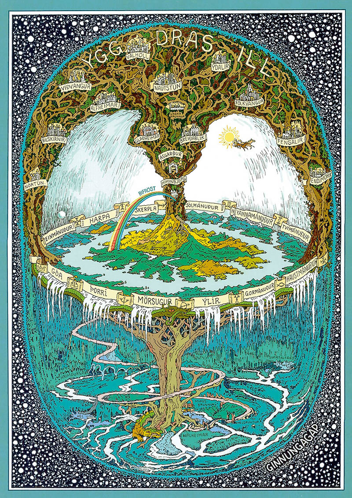
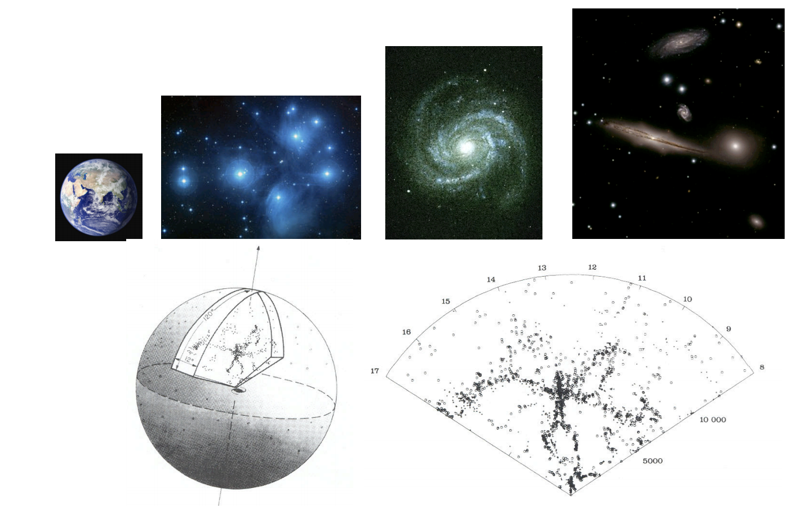

Stockholm University · Department of Astronomy
AS5003 (Cosmology) HT26
Lecture 1 (3 Nov 2026)

Image credit: NASA

Who am I?
Sambit Kumar Giri
Researcher at the Department of Astronomy
sambit.giri@astro.su.se
Email is the best way to reach me. I generally try to respond within one working day.
Office C6:3064 (AlbaNova)
Image credit: NASA
Today’s plan
- Course information, schedule, examination, etc.
- Introductions
- Fundamental Observations
Course website
Log in with SU credentials
Select tab Cosmology HT 26
Most information is found under “Modules”
Learning Objectives
(from course plan)
- Describe the theoretical background of modern cosmology, the main outlines of the history of the universe, and contemporary presentations of problems in cosmology
- Describe and do calculations regarding the dynamics of the universe, the energy content in different components, the cosmic microwave background, nucleosynthesis and thermodynamics in the early universe, and the inflation model
- Describe and do calculations regarding the observational methods that can be used to determine the properties of the Universe
- Show in-depth knowledge of modern research results and methods within some area of cosmology, and express this knowledge in written and oral form
Course Examination
- Graded homework problems (weekly, total 20% of total grade)
- Literature Project (15%). Consists of a written report and an oral presentation in class
- Written exam (65%), scheduled for January 12, 2027.
Note, each component needs a passing grade (>50%) in order to pass the course!
Homework Policy
- Problem sets due every Tuesday (except the last one) before class. Late homework not accepted.
- 6 regular sets during the term, however only best 5 will count towards your grade. (So, you can miss one without any consequences.)
- Working together is encouraged, but everyone must write up and hand in their own solutions.
Literature Assignment
- Instructions and some topic suggestions are up on canvas.
- Initial topics due end of next week - take a look, and start thinking. Goal is to have everyone set up with topics and papers selected by November 19 at the latest.
- Written report due December 15, oral presentations will be held on December 17 and 18.
On using AI
- Acceptable use: for initially researching/brainstorming topics (although definitely check the output!), and for improving text that you write (grammar/spelling, etc.)
- Not acceptable: using AI to generate original text, such as summarising your articles or writing parts of your report.
- If you use AI tools for any part of the assignment, it must be clearly stated in an acknowledgment, including how and for what parts.
- Using AI incorrectly is considered equivalent to plagiarism/cheating by the University and could be subject to disciplinary action.
Course Book

“Introduction to Cosmology”
Barbara Ryden
2nd edition
ISBN 9781107154834
Note, we will cover chapters 1-10
(not the structure formation parts)


History of Cosmology



More historical Cosmologies
(Think-Pair-Share)

- Think Which other historical cosmologies do you know? Any culture, any era.
- Pair Introduce yourselves to your neighbour: short background, why cosmology, expectations for the course. Then compare your cosmologies.
- Share Tell the class who you are, and one interesting cosmology you discussed. One or both of you can speak.
More historical Cosmologies
~100 years ago: Shapley-Curtis Great Debate

Central question: the scale of the Universe.
Shapley was arguing that the Milky Way Galaxy was the entire universe, and that “spiral nebulae” were contained within the Milky Way.
Curtis was arguing that these “nebulae” were galaxies like our own.
Today: the hot Big Bang model
Fundamental observation #1
The night sky is dark
Imagine a Universe that is infinite, uniform, eternal and static.
Filled with stars, with a space density $n_*$.
Every line of sight will eventually intercept a star, at an average distance $$\lambda = \frac{1}{n_* \pi R_*^2}$$


The night sky is dark
The surface brightness $\Sigma_*$ of each star is defined as the flux arriving from the star, per angular area.
$f_* = \dfrac{L_*}{4\pi r^2}$, where $L_*$ is the luminosity of the star, and $r$ is the distance.
$\Omega_* = \dfrac{\pi R_*^2}{4\pi r^2}$
$\Sigma_* = \dfrac{f_*}{\Omega_*} = \dfrac{L_*}{\pi R_*^2}$, independent of distance
Which assumption was wrong?

Fundamental observation #2
The universe is isotropic and homogeneous*
* on scales ~100 Mpc and larger

The universe is isotropic and homogeneous*
* on scales ~100 Mpc and larger

We cannot observe the Universe from any location.
Fundamental observation #3
The Universe contains an isotropic background of microwave radiation (CMB)
Famously discovered by Penzias & Wilson in 1965, awarded Nobel Prize in 1978.
Extremely well described by a blackbody spectrum, with a temperature $T = 2.7255\,\mathrm{K}$.
Implies that the universe started in a hot, dense state.

Will be discussed in more detail in Chapter 8
Fundamental observation #4
Proportions of light elements

In line with predictions from Big Bang Nucleosynthesis; to be discussed in detail in Chapter 9
Fundamental observation #5
Galaxies are receding from each other, with a velocity proportional to their distance

Hubble’s original diagram from 1929.
We will discuss this observation and its implications in detail in the next lecture!
All of these observations are naturally explained in the Hot Big Bang Model
Before next time
- Visit the Canvas site (and answer the anonymous poll on exam times)
- Get the book (if you haven’t already), and read Chapters 1+2
- Read the instructions for the literature assignment, and let me know if you have any questions